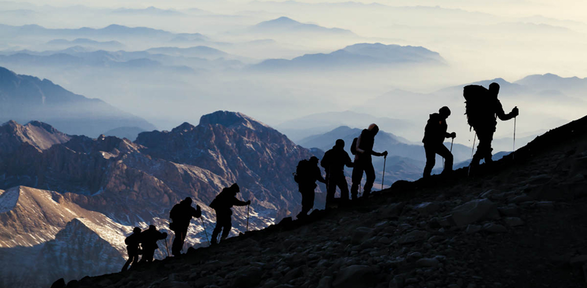

Attività ed esperienze
I parchi naturali italiani offrono esperienze uniche per esplorare paesaggi
straordinari: trekking panoramici, birdwatching, vulcani attivi e sentieri
immersi nella biodiversità di monti e foreste.

I parchi nazionali italiani offrono un’ampia gamma di opportunità per vivere
momenti a contatto con la natura, integrando aspetti ricreativi, educativi e
culturali.
Escursioni e trekking rappresentano spesso la prima scelta: molti itinerari sono mappati e ben segnalati, con diversi gradi di difficoltà, così da soddisfare sia gli appassionati di lunghe camminate sui sentieri alpini o appenninici, sia chi cerca percorsi più dolci fra boschi secolari o tratti costieri panoramici. Lungo il cammino, non è raro imbattersi in centri visita e punti informativi dove guide specializzate forniscono dettagli su flora, fauna e geologia dell’area.
Per coloro che desiderano un approccio più strutturato, visite guidate e laboratori didattici consentono di approfondire tematiche come la conservazione degli ecosistemi, la storia geologica delle montagne o la tutela di specie in pericolo. Queste attività sono spesso rivolte a scuole, famiglie o gruppi organizzati, con possibilità di sperimentare laboratori di educazione ambientale sul campo o workshop pratici (ad esempio, sul riconoscimento delle tracce animali o sull’orientamento in montagna).
Grazie alla varietà morfologica del territorio, numerosi parchi si prestano a sport all’aria aperta: in zone montuose si praticano l’arrampicata, il downhill in mountain bike o lo sci di fondo nelle stagioni fredde, mentre le aree costiere e lacustri favoriscono kayak, canoa, snorkeling e immersioni. Molti parchi dispongono di punti panoramici particolarmente indicati per il birdwatching, dove, con l’ausilio di capanni o torri d’avvistamento, si possono osservare specie migratorie e rapaci di grande fascino.
Anche la dimensione culturale e gastronomica è fondamentale. Molti parchi ospitano eventi e manifestazioni dedicati a prodotti tipici (vino, formaggi, miele, olio) e antiche tradizioni. Infine, per un’immersione completa, alcuni itinerari integrano la visita a siti archeologici o borghi storici, testimoniando l’equilibrio millenario tra l’uomo e l’ambiente. In questo modo, chi sceglie di esplorare i parchi nazionali italiani può trovare esperienze su misura, imparare a conoscere e rispettare la natura, nonché scoprire la ricchezza culturale dei territori protetti.
Escursioni e trekking rappresentano spesso la prima scelta: molti itinerari sono mappati e ben segnalati, con diversi gradi di difficoltà, così da soddisfare sia gli appassionati di lunghe camminate sui sentieri alpini o appenninici, sia chi cerca percorsi più dolci fra boschi secolari o tratti costieri panoramici. Lungo il cammino, non è raro imbattersi in centri visita e punti informativi dove guide specializzate forniscono dettagli su flora, fauna e geologia dell’area.
Per coloro che desiderano un approccio più strutturato, visite guidate e laboratori didattici consentono di approfondire tematiche come la conservazione degli ecosistemi, la storia geologica delle montagne o la tutela di specie in pericolo. Queste attività sono spesso rivolte a scuole, famiglie o gruppi organizzati, con possibilità di sperimentare laboratori di educazione ambientale sul campo o workshop pratici (ad esempio, sul riconoscimento delle tracce animali o sull’orientamento in montagna).
Grazie alla varietà morfologica del territorio, numerosi parchi si prestano a sport all’aria aperta: in zone montuose si praticano l’arrampicata, il downhill in mountain bike o lo sci di fondo nelle stagioni fredde, mentre le aree costiere e lacustri favoriscono kayak, canoa, snorkeling e immersioni. Molti parchi dispongono di punti panoramici particolarmente indicati per il birdwatching, dove, con l’ausilio di capanni o torri d’avvistamento, si possono osservare specie migratorie e rapaci di grande fascino.
Anche la dimensione culturale e gastronomica è fondamentale. Molti parchi ospitano eventi e manifestazioni dedicati a prodotti tipici (vino, formaggi, miele, olio) e antiche tradizioni. Infine, per un’immersione completa, alcuni itinerari integrano la visita a siti archeologici o borghi storici, testimoniando l’equilibrio millenario tra l’uomo e l’ambiente. In questo modo, chi sceglie di esplorare i parchi nazionali italiani può trovare esperienze su misura, imparare a conoscere e rispettare la natura, nonché scoprire la ricchezza culturale dei territori protetti.
Escursioni e Trekking
Parco Nazionale del Gran Paradiso : Sentieri alpini che attraversano ghiacciai e pascoli, ideali per il trekking d’alta quota.
Parco Nazionale d’Abruzzo, Lazio e Molise : Faggete vetuste, percorsi adatti a tutti i livelli e possibilità di avvistare fauna selvatica.
Parco Nazionale del Pollino : Itinerari tra vette selvagge, gole e i caratteristici pini loricati.
Parco Nazionale delle Dolomiti Bellunesi : Ampia rete di sentieri con panorami spettacolari e rifugi alpini.
Parco Nazionale della Sila : Boschi di faggio e pino laricio, percorsi immersi nella natura dell’altopiano.
Parco Nazionale delle Foreste Casentinesi, Monte Falterona e Campigna : Foreste secolari, eremi e abbazie raggiungibili a piedi.
Parco Nazionale del Gran Paradiso : Sentieri alpini che attraversano ghiacciai e pascoli, ideali per il trekking d’alta quota.
Parco Nazionale d’Abruzzo, Lazio e Molise : Faggete vetuste, percorsi adatti a tutti i livelli e possibilità di avvistare fauna selvatica.
Parco Nazionale del Pollino : Itinerari tra vette selvagge, gole e i caratteristici pini loricati.
Parco Nazionale delle Dolomiti Bellunesi : Ampia rete di sentieri con panorami spettacolari e rifugi alpini.
Parco Nazionale della Sila : Boschi di faggio e pino laricio, percorsi immersi nella natura dell’altopiano.
Parco Nazionale delle Foreste Casentinesi, Monte Falterona e Campigna : Foreste secolari, eremi e abbazie raggiungibili a piedi.
Tipologie di attività, associate ai parchi
Visite Guidate e Laboratori Didattici
Parco Nazionale d’Abruzzo, Lazio e Molise : Centri visita per conoscere l’orso bruno marsicano e progetti di educazione ambientale.
Parco Nazionale del Gran Paradiso : Guide che illustrano la storia della protezione dello stambecco e l’ecologia alpina.
Parco Nazionale delle Foreste Casentinesi : Percorsi guidati per scoprire la biodiversità forestale e l’importanza delle faggete vetuste.
Parco Nazionale della Sila : Laboratori su flora, fauna e antiche tradizioni agro-pastorali (es. transumanza).
Parco Nazionale del Vesuvio : Visite geologiche alla scoperta del vulcano e della sua storia eruttiva.
(In quasi tutti i parchi è possibile prenotare visite guidate e percorsi didattici su richiesta.)
Parco Nazionale d’Abruzzo, Lazio e Molise : Centri visita per conoscere l’orso bruno marsicano e progetti di educazione ambientale.
Parco Nazionale del Gran Paradiso : Guide che illustrano la storia della protezione dello stambecco e l’ecologia alpina.
Parco Nazionale delle Foreste Casentinesi : Percorsi guidati per scoprire la biodiversità forestale e l’importanza delle faggete vetuste.
Parco Nazionale della Sila : Laboratori su flora, fauna e antiche tradizioni agro-pastorali (es. transumanza).
Parco Nazionale del Vesuvio : Visite geologiche alla scoperta del vulcano e della sua storia eruttiva.
(In quasi tutti i parchi è possibile prenotare visite guidate e percorsi didattici su richiesta.)
Birdwatching
Parco Nazionale d’Abruzzo, Lazio e Molise : Rapaci come l’aquila reale, e possibilità di avvistare camosci (non volatili, ma di notevole interesse).
Parco Nazionale delle Foreste Casentinesi : Varie specie di uccelli che nidificano in foresta, tra cui picchi e rapaci diurni.
Parco Nazionale dell’Arcipelago Toscano : Uccelli marini e migratori, compresi gabbiano corso e falco pellegrino sulle falesie.
Parco Nazionale del Cilento, Vallo di Diano e Alburn i: Zone umide interne e tratte costiere frequentate da uccelli migratori.
Parco Nazionale d’Abruzzo, Lazio e Molise : Rapaci come l’aquila reale, e possibilità di avvistare camosci (non volatili, ma di notevole interesse).
Parco Nazionale delle Foreste Casentinesi : Varie specie di uccelli che nidificano in foresta, tra cui picchi e rapaci diurni.
Parco Nazionale dell’Arcipelago Toscano : Uccelli marini e migratori, compresi gabbiano corso e falco pellegrino sulle falesie.
Parco Nazionale del Cilento, Vallo di Diano e Alburn i: Zone umide interne e tratte costiere frequentate da uccelli migratori.
Sport all’Aria Aperta
Arrampicata :
Parco Nazionale del Pollino : Pareti rocciose ideali per climber esperti.
Parco Nazionale delle Dolomiti Bellunesi : Falesie di diversa difficoltà e vie ferrate.
Mountain Bike :
Parco Nazionale della Sila : Percorsi sterrati tra boschi e altopiani.
Parco Nazionale d’Abruzzo, Lazio e Molise : Sentieri misti fra faggete e borghi.
Canoa / Kayak / Snorkeling :
Parco Nazionale delle Cinque Terre : Tratti costieri accessibili via mare, piccole cale.
Parco Nazionale dell’Arcipelago Toscano : Escursioni in kayak tra calette e fondali ricchi di vita marina.
Parco Nazionale dell’Arcipelago di La Maddalena : Acque cristalline ideali per immersioni e snorkeling.
Sci e Sport Invernali :
Parco Nazionale della Sila : Sci di fondo e ciaspolate in altopiano.
Parco Nazionale d’Abruzzo, Lazio e Molise : Possibilità di sci di fondo e ciaspolate in aree boschive.
Arrampicata :
Parco Nazionale del Pollino : Pareti rocciose ideali per climber esperti.
Parco Nazionale delle Dolomiti Bellunesi : Falesie di diversa difficoltà e vie ferrate.
Mountain Bike :
Parco Nazionale della Sila : Percorsi sterrati tra boschi e altopiani.
Parco Nazionale d’Abruzzo, Lazio e Molise : Sentieri misti fra faggete e borghi.
Canoa / Kayak / Snorkeling :
Parco Nazionale delle Cinque Terre : Tratti costieri accessibili via mare, piccole cale.
Parco Nazionale dell’Arcipelago Toscano : Escursioni in kayak tra calette e fondali ricchi di vita marina.
Parco Nazionale dell’Arcipelago di La Maddalena : Acque cristalline ideali per immersioni e snorkeling.
Sci e Sport Invernali :
Parco Nazionale della Sila : Sci di fondo e ciaspolate in altopiano.
Parco Nazionale d’Abruzzo, Lazio e Molise : Possibilità di sci di fondo e ciaspolate in aree boschive.
Siti Archeologici e Borghi Storici
Parco Nazionale delle Cinque Terre : I caratteristici borghi marinari (Riomaggiore, Manarola, Corniglia, Vernazza, Monterosso).
Parco Nazionale del Vesuvio : Vicinanza a siti archeologici come Pompei ed Ercolano (extraparco, ma strettamente correlati).
Parco Nazionale dell’Arcipelago Toscano : Isola d’Elba con le residenze napoleoniche, resti romani a Giannutri.
Parco Nazionale del Cilento, Vallo di Diano e Alburni : Vicinanza ai siti di Paestum e Velia, ricchi di testimonianze della Magna Grecia.
Parco dell’Etna : Paesini etnei con centri storici in pietra lavica, chiese e musei dedicati all’attività vulcanica.
Parco Nazionale delle Cinque Terre : I caratteristici borghi marinari (Riomaggiore, Manarola, Corniglia, Vernazza, Monterosso).
Parco Nazionale del Vesuvio : Vicinanza a siti archeologici come Pompei ed Ercolano (extraparco, ma strettamente correlati).
Parco Nazionale dell’Arcipelago Toscano : Isola d’Elba con le residenze napoleoniche, resti romani a Giannutri.
Parco Nazionale del Cilento, Vallo di Diano e Alburni : Vicinanza ai siti di Paestum e Velia, ricchi di testimonianze della Magna Grecia.
Parco dell’Etna : Paesini etnei con centri storici in pietra lavica, chiese e musei dedicati all’attività vulcanica.
Privacy Chi siamo
Parchi d’Italia